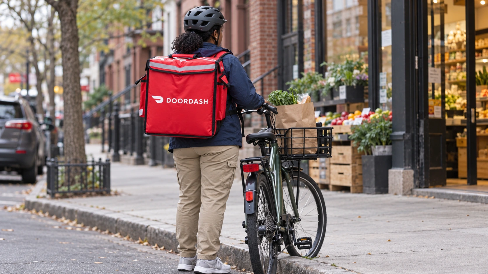

DoorDash Is in Advanced Talks to Buy Instacart in a Deal Worth About $17 Billion
Reports of advanced negotiations put grocery delivery, retailer relationships and acquisition costs in focus. Neither company has announced a signed deal.

DoorDash is in advanced talks to acquire Instacart in a transaction that could value the grocery-delivery company at about $17 billion, The Wall Street Journal reported Monday. The talks would bring together a large restaurant-delivery network and an established grocery marketplace. Neither company has announced a signed acquisition agreement, and negotiations could still end without a deal.
Reuters independently reported the advanced discussions, citing a person familiar with the matter. Its account put Instacart's market value at approximately $13 billion at Friday's close. During Monday's regular trading, Reuters reported Instacart shares up about 8% and DoorDash down around 6%. Those are observations from its report, rather than a claim about either stock's final closing price.
The different share reactions put the two sides of an acquisition into view. A seller's investors may anticipate a higher offer, while a buyer's investors consider what that offer would cost. Our guide to mergers and acquisitions explains why a strategic rationale, an agreed price and a completed transaction are separate stages. Monday's news concerns the first stages, with essential terms still unavailable.
Grocery relationships are central to the potential purchase
Instacart brings more than delivery orders. In its August results, the company described a business spanning its consumer marketplace, retailers' ecommerce systems and advertising. It said it partnered with more than 2,200 retail banners representing nearly 100,000 stores. A buyer would need to preserve those relationships while deciding how much of the business to integrate with its existing platform.
The same results show the size of that operation. Instacart reported $10.351 billion in gross transaction value and $1.043 billion in revenue for the quarter ended June 30, both up 14% from a year earlier. Gross transaction value measures activity through the platform; it is not the amount Instacart books as its own revenue. Confusing the two would overstate the business's sales.
DoorDash's second-quarter report showed $4.454 billion in revenue and 970 million total orders. Its marketplace gross order value was $33.078 billion. These are historical company-wide figures, covering a broader business than Instacart's grocery-focused operation. They establish scale, but simply adding platform activity together would not establish the revenue, costs or competitive position of a combined company.
The price needs an operating case
Combining networks could create opportunities to share technology, reach customers more often or spread delivery costs across more orders. Whether that happens depends on practical details: where demand overlaps, how retailers respond, how workers are organized and whether customers keep ordering without additional incentives. None of those benefits arrives automatically when an acquisition is announced.
Instacart reported $111 million in quarterly net income and DoorDash reported $200 million attributable to common stockholders. Profit is relevant to an acquisition's economics, but funding and integration also require cash. Our free cash flow guide explains why earnings alone cannot answer how much a buyer can spend while supporting its existing operations and commitments.
Bloomberg separately reported Monday that Instacart is winding down its Caper smart-cart business. A company representative told the publication that the decision had been developing for months and predated the sale reports. It should therefore not be presented as a restructuring ordered by DoorDash or as evidence that the acquisition has already been negotiated and approved.
What shareholders still need to see
A definitive agreement would need to resolve the consideration, financing, conditions and timetable. Competition review would also depend on the actual transaction and the markets regulators assess. It is premature to assign a certain approval outcome, or to assume a reported headline valuation is money that shareholders are already entitled to receive.
Our explanation of merger deal spreads describes why even an agreed takeover can trade below its stated offer value. An unannounced deal carries an earlier layer of uncertainty: the parties may never sign. For now, the development is a reported acceleration in talks, with a potentially substantial reshaping of grocery delivery still dependent on terms and execution.
Sources and methodology
Sources checked October 26, 2026. Company statements, reported findings and forecasts are attributed in the text. Financial and operational implications are editorial analysis.
- Wall Street Journal: advanced acquisition talks, October 26
- Reuters: independent sourcing and Monday trading reaction
- DoorDash: second-quarter 2026 financial results, August 5
- Instacart: second-quarter 2026 financial results, August 6
- Bloomberg: Caper Cart wind-down and company explanation, via Yahoo Finance